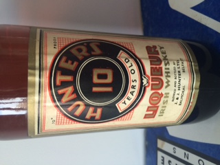

Page 1 of 1
Hunter 10 Year Old Irish Whiskey

Posted:
Mon Apr 18, 2016 7:59 pmby Jaggysnake537
I have recently inherited a bottle of Hunters 10 Irish Whisky which I know is fairly old and have been told it's fairly collectible. Just wondering if anyone could give me a rough valuation? Would it be worth drinking? I can post photos if that's any help
Re: Hunter 10 Year Old Irish Whiskey
Posted:
Mon Apr 18, 2016 11:23 pmby Good Whiskey Hunting
If you can post photos that would be great.
It's more of a collectors whiskey than a drinking one. I'm sure you wouldn't mind drinking it either. They turn up occasionally and are an interesting find. Value would depend on condition.
Re: Hunter 10 Year Old Irish Whiskey
Posted:
Sat Apr 23, 2016 2:00 pmby Jaggysnake537
- 
- IMG_2473.JPG (35.62 KiB) Viewed 538 times
Here's some photos of the bottle. The label is in good condition. I've kept it wrapped in cling film so it won't dry out
Re: Hunter 10 Year Old Irish Whiskey
Posted:
Mon Apr 25, 2016 8:47 pmby Good Whiskey Hunting
The last one I seen at auction was in a lot with some other odd bottles.
They went for £250.
Another one went with a Jameson 7 year old for €220 a few years ago too but the Jameson 7 was the gem there.
I'm guessing it would go for €120-180 nowadays. It could get more in the right auction.